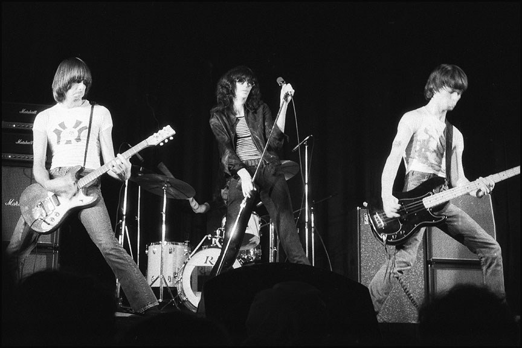

ROCK MEMORY ARCHIVE / 搖滾記憶檔案1938—2025
搖滾記憶
ROCK & ROLLA HISTORY IN 33 MOMENTS

33歷史瞬間
照片署名與授權 ↗
FOLLOW THE FEEDBACK
跟著電流，
回到故事發生的地方。
每一個圓點，都是一次改變方向的瞬間。
點開故事、放大照片，或讓時間自己前進。
THE LAST NOTE ISN'T THE END
聲音還在。
故事，也還在。
下一次拿起吉他，下一次站進人群。
搖滾的下一段記憶，也許就是你。